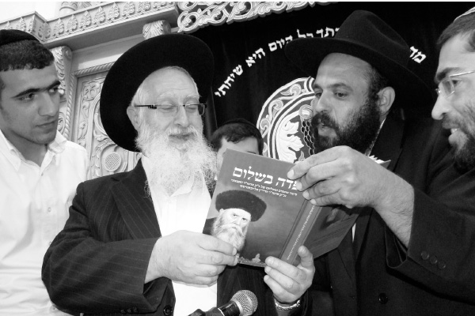
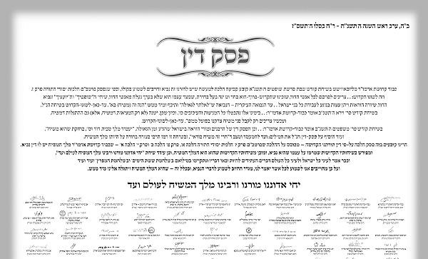

Ha’rav Yaakov Yosef O.B.M. a Warrior for Truth
For many years, R’ Shabtai Weintraub (a.k.a. Shai Gefen) enjoyed a close connection with Rabbi Yaakov Yosef z”l, who passed away on 2 Iyar. * Recollections and stories of a great supporter of the Rebbe.

It is hard to write about Rabbi Yaakov Yosef so soon after his passing. He was a rare combination of brilliance and diligence, a tremendous disseminator of Torah and a warrior for Hashem’s battles in Shleimus Ha’Am and Shleimus Ha’Aretz. He gave great nachas to the Rebbe both for his tireless work on Mihu Yehudi and later, in his fight for Shleimus HaAretz.
BRIEF BIOGRAPHY
R’ Yaakov Yosef was born in Yerushalayim on 23 Tishrei 5707/1946, the second son of Rabbi Ovadia Yosef, president of the Moetzes Chachmei Yisroel. He learned in Porat Yosef and Kol Torah in Yerushalayim. After he married Rabbanit Nitzchiya, he learned in the kollel Kol Yaakov and at Mosad HaRav Kook where he also acquired smicha.
He began giving shiurim at the age of 26, replacing his father who was appointed as Chief Rabbi of Tel Aviv. His father asked him to “at least preserve the minyan” at the Borochov shul. His son took this assignment seriously and began giving shiurim there. He also brought many other maggidei shiurim and breathed life into the place. These shiurim attracted many people.
In later years, he was pressed into service on the political front and served as member of the Jerusalem City Council, representing Shas. In 1984 he was elected to the 11th Knesset elections on the Shas list.
He served only one term in the Knesset and then founded Yeshivas Chazon Yaakov, named for his grandfather, R’ Yaakov Ovadia. He also began serving as rav in the Givat Moshe neighborhood of Yerushalayim. R’ Yosef was also a member of the Kashrus division of Badatz Yisa Bracha and sat in on many sessions of the Beis Din Kehillas HaYirei’im, headed by Rabbi Yisroel Schwartz.
Along with his greatness in Torah, he had a sterling character and was humble with everyone. Even his deepest shiurim were said in a down to earth style. He was beloved by thousands who attended his shiurim regularly. Hundreds of his shiurim on sections of Shulchan Aruch have been publicized and are accessible on CD.
AS A CHASSID TO HIS REBBE
His acquaintance with Chabad began when he lived in Shikun Chabad in Yerushalayim. He sent his children to Chabad schools.
R’ Yaakov Yosef saw the Rebbe when he left Eretz Yisroel one time on a mission for mosdos Torah in 5749. During that visit he participated in the Rebbe’s minyan for Mincha and received the Rebbe’s bracha.
When he was a member of the Knesset he received a number of instructions from the Rebbe on the topic of Mihu Yehudi.
His boundless faith in what the Rebbe said turned him into a veritable Chassid. In every interview and conversation, he stressed that we are on the threshold of the Geula. I’ll never forget what he told me in one of the rare interviews he granted me, “We are at the conclusion of the birth pangs of Moshiach and we must quickly prepare for Moshiach’s coming. After the Yom Kippur War, Rabbi Bentzion Abba Shaul told me, ‘We finished the war of Gog and Magog and now Moshiach has to come.’” He also connected this to the burning topic of Shleimus Ha’Aretz, “The goyim want to lead us to the abyss, to destroy us, and Jewish leaders are leading the Jewish people towards a most difficult situation. The Gemara defines this situation as one in which Hashem is angry at the sheep and he places a blind leader to lead the flock who leads the entire flock and they all fall. This is what is happening today, and there is no doubt that this is an inseparable part of the Geula process.”
R’ Yaakov Yosef spoke of the Rebbe with tremendous admiration. At one of his shiurim delivered at the Meoras HaMachpeila he said, “The Rebbe of Chabad, seventh from Rabbi Shneur Zalman of Liadi, the Baal HaTanya, has tremendous knowledge of Shas and poskim, l’halacha and l’maaseh. He also knows a lot of Kabbala. The Rebbe is an incredibly brilliant man. He paved the way to be mekarev Jews to our Father in heaven. Until sixty years ago, few knew how to bring people back in t’shuva. He led the way. There are 4000 Chabad Chassidim today, spread around the world, whose holy work is to be mekarev Jews to our Father in heaven. Thanks to them, tens and hundreds of thousands have done t’shuva. It is all with the Admur’s instructions. He is the first to breach the wall and he was followed by hundreds of organizations around the world.
“The holy Zohar says: If the people of this world knew the greatness in drawing people close, they would run after this like they run after their lives. Chabad Chassidim save lives. There are many places that if they had no Chabad Chassidim, the Jews there would assimilate completely among the gentiles. Boruch Hashem, the Chabadnikim are doing a lot.
“The Rebbe also saw what others did not see. Forty years ago, he said the Law of Return must be amended to prevent assimilation. But the members of Likud and Labor did not want to amend the law and as a result, sadly, we have tens of thousands of mixed marriages every year, here, in Eretz Yisroel!
“The religious, back then, did not understand this, but the Rebbe of Chabad knew what would happen. Today too, religious parties sit in the Coalition and don’t amend the law. Sadly, they bring goyim to the land of our fathers and the results clearly demonstrate that the situation is terrible.
“The Rebbe of Chabad had vision and it’s a pity that today too, after seeing the results that the Chabad Rebbe warned about, that the religious establishment sitting in the Coalition conducts business as usual and does not amend the Law of Return.”
***

After Gimmel Tammuz, R’ Yaakov Yosef signed on the p’sak halacha that the Rebbe is in the category of Navi and Moshiach and he even said so publicly.
He fought discrimination against Sephardic girls in the religious school system. He noted that only in Chabad schools (where there are no discriminatory quotas) do we see students of all backgrounds learning together. This is thanks to the Rebbe, he said, who integrated all kinds of people no matter their ethnic origin.
R’ Yosef actively participated in the Rebbe’s campaigns. I saw the great respect and admiration he had for the Rebbe. A few years ago, I invited him to attend an event in honor of the Rebbe’s birthday that took place at the stadium in Ramat Gan. He told me that despite the many things he had to do and the shiurim he had to give, he felt he must attend in honor of the Rebbe’s birthday.
FIGHTING FOR SHLEIMUS HA’ARETZ
R’ Yaakov Yosef’s daily schedule was very demanding. From early in the morning until late at night he would teach Torah. He never agreed to forgo a single shiur. He gave at least forty shiurim a week for decades!
When I arranged to interview him for Beis Moshiach or Eretz Yisroel Shelanu, it was either early in the morning before he left to give a shiur, or at night, in his home in Yerushalayim. Even if it was after a very busy day, he seemed as fresh as though his day had just begun.
When he spoke about Shleimus Ha’Aretz, his tone of voice would change. I saw the great pain and the anger he had for the religious parties who did nothing in this regard.
I remember asking him about the expulsion from Gush Katif and the fight he waged for Shleimus Eretz Yisroel when it often seemed as though he was a lone voice. He said, “The more important the fight, the more difficult it is. The yetzer ha’ra ignores things that aren’t important. We are fighting now to save Eretz Yisroel, Yerushalayim and the Holy of Holies. It’s only natural that the yetzer ha’ra will put up a strong fight.”
During Operation Pillar of Cloud, when missiles landed in Ashkelon and Ashdod and all over the south, he said, “Whoever remained silent during the Disengagement, cannot say, ‘our hands did not shed this blood and our eyes did not see.’ Whoever remained silent or was a partner to Sharon’s plan, has a share in every missile and Kassam that falls on Sederot, Ashkelon and in the future of Ashdod and Kiryat Gat. They spoke about ‘Gaza First,’ and today we are in Yerushalayim. Let us hope that this is the end and there will be no more withdrawals.”
After the Gush Katif museum opened in Yerushalayim, so people would not forget the expulsion crime that took place there, R’ Yosef veered from his usual habits and went in the middle of the day to pay a visit. He spent a long time there with the mashpia, R’ Zalman Notik. He greatly encouraged the founding of the museum. He said that it had the ability to prevent an expulsion from Yehuda-Shomron and urged us to advertise the museum and to bring public figures to visit.
He was never afraid of what people would say and he was willing to sacrifice everything for the truth, especially when he knew that it affected matters of k’dusha and Shleimus Ha’Aretz. He was very willing to sign whenever I wanted his signature for things related to Shleimus Ha’Aretz. He constantly encouraged and did everything possible so that the public outcry and rabbinical protests should find the proper expression. On the eve of the Chevron Accords, he castigated PM Netanyahu. So too, in an interview he granted me during Olmert’s government, he castigated Shas for refusing to leave the government over the Annapolis Accords. He attended the rally of thousands, “Mi L’Hashem Eilai” that took place in Tel Aviv, and the huge gathering following the expulsion from Gush Katif, “Lo Nishkach v’Lo Nislach” (We Won’t Forget and We Won’t Forgive).
When people wanted to leave the country because of the security situation, he warned them not to go, relying on the Rebbe’s opinion. He told me, “If they continue making withdrawals, we will not be able to continue living in Eretz Yisroel. But Moshiach has to come speedily and bring the Geula and so we cannot leave Eretz Yisroel. Before the Six-Day War the situation was also bleak and many left or were about to leave, but the Lubavitcher Rebbe promised, ‘Behold, the Guardian of Israel does not slumber or sleep,’ and there will be miracles. And there were. We are confident that, despite the situation our leaders are leading us towards, the Jewish people will rest securely in its land and Hashem will send us his anointed one, the righteous redeemer.”
I’ll never forget the interview he granted me during the period of the expulsion from Gush Katif. He warned that whoever kept quiet and did not protest, would be held to heavenly account for every missile that fell on Jews from Gaza. He made no concessions when it came to Shleimus Ha’Aretz. Because of pikuach nefesh, he did all he could to warn people, even when it seemed he was a lone voice. There were also those who were angry at him for not falling in line with his family’s views, but the honor of heaven and the inviolability of halacha reigned supreme for him.”
INSPIRATION FROM THE REBBE RAYATZ
Two years ago, he was arrested on suspicion of incitement to racism for his endorsement of the book Toras HaMelech (The King’s Torah), which discusses when it is permissible for a Jew to kill a gentile. He remained fearless and did not report to the police for questioning, because “divrei Torah have no place in interrogation rooms. Although one must obey the law of the land, that is only when there is equality before the law. When the Justice Office has a department for special projects whose only purpose is to persecute those faithful to Eretz Yisroel, while they remain silent in the face of announcements of murder and hatred on the part of the Left, we must protest and not report for questioning. Boruch Hashem, I and Rabbi Lior were able to rouse public opinion to the fact that Jews are being discriminated against. The purpose of the current investigation was to denigrate the honor of the Torah and not for law and order.”
The Thursday before he was arrested, I went to his shiur in Rechovos and gave him the new book, Pada B’shalom about the arrest of the Rebbe Rayatz. His children told me that over Shabbos, R’ Yosef read through the entire book and he told them that he would interact with the police following the Rebbe Rayatz’s approach, i.e. not answering them and not fearing them.
He later said that the book gave him the strength and inner fortitude to see what Jewish heroism is, without fearing the authorities. He even read to the police the part which describes the interrogator threatening the Rebbe Rayatz with his gun, and the Rebbe not flinching but saying that one who has one G-d and two worlds is unafraid of “that toy.”
TIFERES OF TIFERES
R’ Yosef’s mesirus nefesh for Torah was apparent this past year when he was ill and suffered terribly, but continued giving shiurim, even in distant places.
He passed away on 2 Iyar, Tiferes of Tiferes in the presence of his family and rabbanim. I attended his funeral, which took place shortly before Shabbos. Tens of thousands came to pay their final respects to a talmid chacham whose entire life was dedicated to Hashem, His Torah, and the Rebbe’s battles.
Beis Moshiach (staff). "Ha’rav Yaakov Yosef O.B.M. a Warrior for Truth." Beis Moshiach, no. 879 (May 9, 2013).